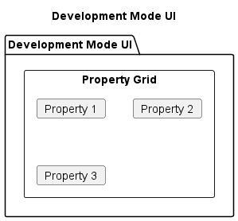

Development Mode Module
This module contains the DevelopmentMode class that manages the property development functionality in the game, allowing players to build houses and hotels on their properties.
Key Features
Property Development: Management of house and hotel construction
Development Rules: Enforcement of even development rules across color groups
Cost Management: Handling of development costs and player finances
User Interface: Interactive UI for development decisions
Rule Validation: Checking property eligibility for development
Visual Feedback: Display of development options and results
DevelopmentMode Class
The DevelopmentMode class encapsulates the property development functionality:
@enduml
Development Rules
The module implements property development rules:
![@startuml
title Property Development Rules
start
:Player Requests Development;
:Verify Player Owns Full Property Group;
note right
Player must own all properties
of the same color group
end note
if (Full Group Owned?) then (Yes)
:Check Even Development Rule;
note right
Houses must be built evenly
across properties in a group
end note
if (Even Development?) then (Yes)
:Check House/Hotel Availability;
note right
Game has limited supply of
32 houses and 12 hotels
end note
if (Units Available?) then (Yes)
:Check Player Funds;
if (Can Afford?) then (Yes)
:Allow Development;
else (No)
:Insufficient Funds;
endif
else (No)
:No Units Available;
endif
else (No)
:Uneven Development;
endif
else (No)
:Incomplete Property Group;
endif
stop
@enduml](../_images/plantuml-d532eafa27c7454cad54ee2ed0cc7d1e6ab0c403.png)
Development Process
The module implements a structured development process:
![@startuml
title Property Development Process
start
:Player Enters Development Mode;
:Display Available Properties;
note right
Only properties in complete
color groups are shown
end note
:Player Selects Property;
:Show Development Options;
note right
- Build House
- Build Hotel
- Sell House
- Sell Hotel
- Mortgage/Unmortgage
end note
if (Player Choice?) then (Build House)
:Check Development Rules;
if (Can Build House?) then (Yes)
:Calculate House Cost;
if (Player Can Afford?) then (Yes)
:Deduct Cost from Player;
:Add House to Property;
:Update Visual Representation;
else (No)
:Show "Insufficient Funds" Message;
endif
else (No)
:Show Rule Violation Message;
endif
else if (Player Choice?) then (Build Hotel)
:Check Hotel Requirements;
if (Can Build Hotel?) then (Yes)
:Calculate Hotel Cost;
if (Player Can Afford?) then (Yes)
:Deduct Cost from Player;
:Remove 4 Houses;
:Add Hotel to Property;
:Update Visual Representation;
else (No)
:Show "Insufficient Funds" Message;
endif
else (No)
:Show Rule Violation Message;
endif
else if (Player Choice?) then (Sell House)
if (Has Houses?) then (Yes)
:Calculate Refund Amount;
:Give Refund to Player;
:Remove House from Property;
:Update Visual Representation;
else (No)
:Show "No Houses to Sell" Message;
endif
else if (Player Choice?) then (Sell Hotel)
if (Has Hotel?) then (Yes)
:Calculate Refund Amount;
:Check House Bank Availability;
if (Houses Available?) then (Yes)
:Give Refund to Player;
:Remove Hotel from Property;
:Add 4 Houses to Property;
:Update Visual Representation;
else (No)
:Show "Not Enough Houses Available" Message;
endif
else (No)
:Show "No Hotel to Sell" Message;
endif
endif
:Exit Development Mode or Continue;
stop
@enduml](../_images/plantuml-865cf6c21648b0edddf91a68b082d67644541d7f.png)
Even Development Rule
The module enforces the even development rule for properties:
![@startuml
title Even Development Rule
start
:Check Development Rule;
:Get All Properties in Color Group;
:Find Minimum Development Level;
note right
Minimum number of houses
across all properties in group
end note
:Find Maximum Development Level;
note right
Maximum number of houses
across all properties in group
end note
if (Max - Min <= 1?) then (Yes)
:Rule Satisfied;
if (Property Level = Min?) then (Yes)
:Can Build House;
else (No)
:Cannot Build House Yet;
note right
Must build on properties
with fewer houses first
end note
endif
else (No)
:Rule Violated;
:Cannot Build House;
note right
Development too uneven
across property group
end note
endif
stop
@enduml](../_images/plantuml-2a8f1ba043fd366993bcf15b53cd3996075249cc.png)
Integration with Other Modules
The DevelopmentMode module integrates with several other modules:
- class Game {
-dev_manager : DevelopmentMode +toggle_development_mode() +handle_development_request()
- class GameLogic {
+build_house(property, player) +build_hotel(property, player) +get_available_properties_for_development()
- class Property {
+houses : int +add_house() +add_hotel() +remove_house() +remove_hotel()
- class Player {
+money : int +pay(amount) +receive(amount)
- class UI {
+draw_development_ui() +handle_development_click()
Game *– DevelopmentMode DevelopmentMode –> GameLogic : uses DevelopmentMode –> Property : modifies DevelopmentMode –> Player : charges/refunds DevelopmentMode <–> UI : interacts with
@enduml
Development UI
The module includes a specialized UI for property development:

- rectangle “Selected Property Info” {
rectangle “Property Name” as Name rectangle “Current Development” as Dev rectangle “Development Cost” as Cost
- rectangle “Action Buttons” {
rectangle “Build House” as BH rectangle “Build Hotel” as BHT rectangle “Sell House” as SH rectangle “Sell Hotel” as SHT rectangle “Cancel” as Cancel
- rectangle “Rule Information” {
text “Development Rules” text “Current Status” text “Error Messages”
@enduml
Key Methods
The DevelopmentMode class provides several key methods:
activate(): Enters development mode for a specific player
deactivate(): Exits development mode
get_available_properties(): Gets properties eligible for development
build_house(): Adds a house to a property
build_hotel(): Adds a hotel to a property
sell_house(): Removes a house from a property
sell_hotel(): Removes a hotel from a property
check_even_development(): Validates the even development rule
get_development_status(): Reports on current development levels